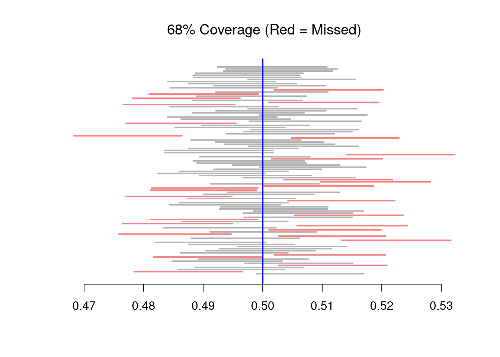
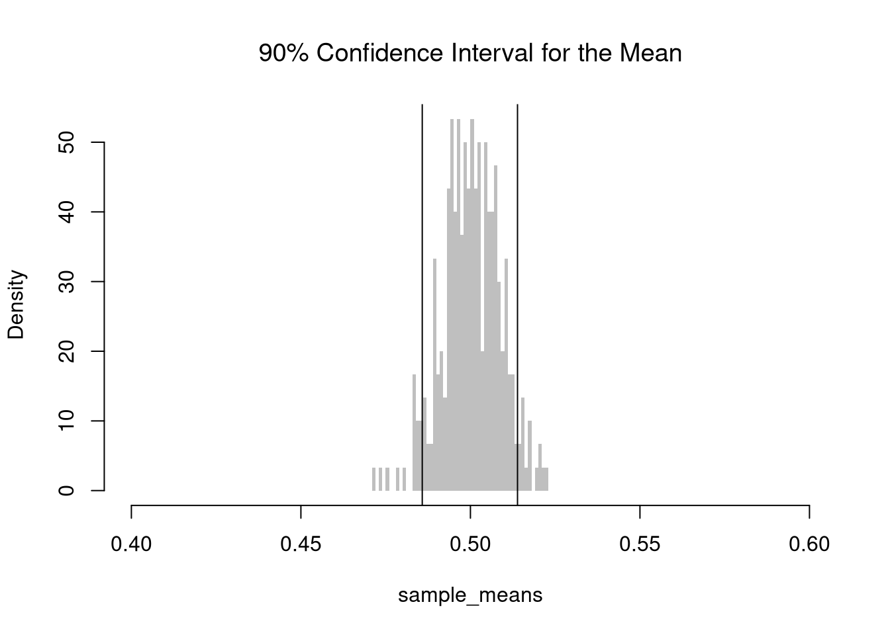
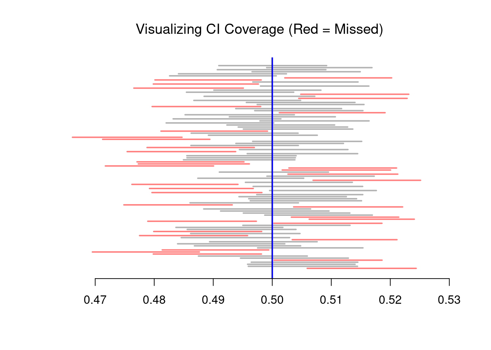

7 Confidence Intervals
7.1 Confidence Intervals
The sampling distribution describes how the statistic varies across samples. The confidence interval is a way to turn knowledge about that sampling distribution into a statement about the unknown parameter. A \(Z\%\) confidence interval for the mean implies that \(Z\%\) of the intervals we generate will contain the population mean, \(\mu\).
Note that a \(Z\%\) confidence interval does not imply a \(Z\%\) probability that the true parameter lies within a particular calculated interval. The interval you computed either contains the true mean or it does not.
In practice, people often interpret confidence intervals informally as “showing the uncertainty around our estimate”: wider intervals correspond to higher sampling variability and less precise information about \(\mu\). Just as with standard errors, we can estimate confidence intervals using theory-driven or data-driven approaches. We will focus on data-driven approaches first.
Computation.
For example, consider the sample mean. We simulate the sampling distribution of the sample mean and construct a \(90\%\) confidence interval by taking the \(5^{th}\) and \(95^{th}\) percentiles of the sampling distribution. We then expect that approximately \(95\%\) of our constructed confidence intervals contain the theoretical population mean.
For example, consider the mean of a uniform random sample with a sample size of \(n=1000\).
Code
# Create 300 samples, each with 1000 random uniform variables
x_samples <- matrix(nrow=300, ncol=1000)
for(i in seq(1,nrow(x_samples))){
x_samples[i,] <- runif(1000)
}
sample_means <- apply(x_samples, 1, mean) # mean for each sample (row)
# Middle 90%
mq <- quantile(sample_means, probs=c(.05,.95))
paste0('we are 90% confident that the mean is between ',
round(mq[1],2), ' and ', round(mq[2],2) )
## [1] "we are 90% confident that the mean is between 0.49 and 0.52"
hist(sample_means,
breaks=seq(.4,.6, by=.001),
border=NA, freq=F,
col=rgb(0,0,0,.25), font.main=1,
main='90% Confidence Interval for the Mean')
abline(v=mq)
The \(5^{th}\) and \(95^{th}\) percentiles are called the “critical values” for the \(90\%\) confidence interval. The \(2.5^{th}\) and \(97.5^{th}\) percentiles are the critical values for the \(95\%\) confidence interval.
Interval Size.
Confidence intervals shrink with more data, as averaging washes out random fluctuations. Here is the intuition for estimating the weight of an apple:
- With \(n=1\) apple, your estimate depends entirely on that one draw. If it happens to be unusually large or small, your estimate can be far off.
- With \(n=2\) apples, the estimate averages out their idiosyncrasies. An unusually heavy apple can be balanced by a lighter one, lowering how far off you can be. You are less likely to get two extreme values than just one.
- With \(n=100\) apples, individual apples barely move the needle. The average becomes stable.
Code
X <- c(18,20,22,24) #student ages
# six possible samples of size 2
m1 <- mean( X[c(1,2)] ) #{1,2}
m2 <- mean( X[c(1,3)] ) #{1,3}
m3 <- mean( X[c(1,4)] ) #{1,4}
m4 <- mean( X[c(2,3)] ) #{2,3}
m5 <- mean( X[c(2,4)] ) #{2,4}
m6 <- mean( X[c(3,4)] ) #{3,4}
means_2 <- c(m1, m2, m3, m4, m5, m6)
quantile(means_2, probs=c(.25,.75)) ## 50% CI
## 25% 75%
## 20.25 21.75
# four possible samples of size 3
m1 <- mean( X[c(1,2,3)] )
m2 <- mean( X[c(1,2,4)] )
m3 <- mean( X[c(1,3,4)] )
m4 <- mean( X[c(2,3,4)] )
means_3 <- c(m1, m2, m3, m4)
quantile(means_3, probs=c(.25,.75)) ## 50% CI
## 25% 75%
## 20.5 21.5Code
# Create 300 samples, each of size n
n <- 1000
x_samples <- matrix(nrow=300, ncol=n)
for(i in seq(1,nrow(x_samples))){
x_samples[i,] <- runif(n)
}
# Compute means for each row (for each sample)
sample_means <- apply(x_samples, 1, mean)
mq <- quantile(sample_means, probs=c(.05,.95))
paste0('we are 90% confident that the mean is between ',
round(mq[1],2), ' and ', round(mq[2],2) )
hist(sample_means,
breaks=seq(.4,.6, by=.001),
border=NA, freq=F,
col=rgb(0,0,0,.25), font.main=1,
main='90% Confidence Interval for the Mean (larger n)')
abline(v=mq)For a fixed sample size \(n\), there is a trade-off between precision: the width of a confidence interval, and accuracy: the probability that a confidence interval contains the theoretical value.
Percentile Intervals.
Often, we have only one sample. In practice, we can use resampling procedures to estimate a confidence interval. E.g., we repeatedly resample data and construct a bootstrap or jackknife sampling distribution. Then we compute the confidence intervals using the upper and lower quantiles of the sampling distribution.
7.2 Hypothesis Testing
In this section, we test hypotheses using data-driven methods that assume much less about the data generating process. There are two main ways to conduct a hypothesis test to do so: inverting a confidence interval and imposing the null. The first treats the distribution of estimates directly; the second explicitly enforces the null hypothesis to evaluate how unusual the observed statistic is. Both approaches rely on the bootstrap: resampling the data to approximate sampling variability. The most typical case is hypothesizing about about the mean.
Invert a CI.
One main way to conduct hypothesis tests is to examine whether a confidence interval contains a hypothesized value. We then use this decision rule
- reject the null if value falls outside of the interval
- fail to reject the null if value falls inside of the interval
We typically use a \(95\%\) confidence interval to create a rejection region: the area that falls outside of the interval.
Note
For example, suppose you hypothesize the mean is \(9\). You then construct a bootstrap distribution with \(95\%\) confidence interval, and find your hypothesized value falls outside of the confidence interval. Then, after accounting for sampling variability (which you estimate), it still seems extremely unlikely that the theoretical mean actually equals \(9\), so you reject that that hypothesis. (If the theoretical value landed in the interval, you would “fail to reject” the theoretical mean equals \(9\).)
Code
hist(bootstrap_means, breaks=25,
border=NA,
main='',
xlab='Bootstrap Samples')
# CI
ci_95 <- quantile(bootstrap_means, probs=c(.025, .975))
abline(v=ci_95, lwd=2)
# H0: mean=9
abline(v=9, col=2, lwd=2)
Tip
The above procedure also generalizes to many other statistics. Perhaps the most informative additional statistics for spread or shape. E.g., you can conduct hypothesis tests for sd and IQR, or skew and kurtosis.
Code
# Bootstrap Distribution for SD
sd_obs <- sd(sample_dat)
bootstrap_sd <- vector(length=999)
for(b in seq_along(bootstrap_sd)){
x_b <- sample(sample_dat, replace=T)
sd_b <- sd(x_b)
bootstrap_sd[b] <- sd_b
}
# Test for SD Differences (Invert CI)
sd_null <- 3.6
hist(bootstrap_sd, freq=F,
border=NA, xlab='Bootstrap', font.main=1,
main='Standard Deviations (Invert CI)')
sd_ci <- quantile(bootstrap_sd, probs=c(0.025,.975) )
abline(v=sd_ci, lwd=2)
abline(v=sd_null, lwd=2, col=2)
To better your understanding, try redoing the above for any function (such as IQR(x_b)/median(x_b))
Impose the Null.
We can also compute a null distribution: the sampling distribution of the statistic under the null hypothesis (assuming your null hypothesis was true). We use the bootstrap to loop through a large number of “resamples”. In each iteration of the loop, we impose the null hypothesis and re-estimate the statistic of interest. We then calculate the range of the statistic across all resamples and compare how extreme the original value we observed is.
7.3 Misc. Topics
Prediction Intervals.
Note that \(Z\%\) confidence intervals do not generally cover \(Z\%\) of the data (those types of intervals are covered later). In the examples above, notice the confidence interval for the mean differs from the confidence interval of the median, and so both cannot cover \(90\%\) of the data. The confidence interval for the mean is roughly \([0.48, 0.52]\), which theoretically covers only a \(0.52-0.48=0.04\) proportion of uniform random data, much less than the proportion \(0.9\).
In addition to confidence intervals, we can also compute a prediction interval which estimate the variability of new data rather than a statistic. To do so, we compute the frequency each value was covered.
Code
x <- runif(1000)
# Middle 90% of values
xq0 <- quantile(x, probs=c(.05,.95))
paste0('we are 90% confident that the a future data point will be between ',
round(xq0[1],2), ' and ', round(xq0[2],2) )
## [1] "we are 90% confident that the a future data point will be between 0.04 and 0.95"
hist(x,
breaks=seq(0,1,by=.01), border=NA,
main='Prediction Interval', font.main=1)
abline(v=xq0)
Normal Approximation.
Given the sampling distribution is approximately normally, the usual confidence intervals are symmetric. For the sample mean \(M\), we can construct the interval \([M - E, M + E]\), where \(E\) is a “margin of error” on either side of \(M\). A coverage level of \(1-\alpha\) means \(Prob( M - E < \mu < M + E)=1-\alpha\). I.e., if the same sampling procedure were repeated \(100\) times from the same population, approximately \(95\) of the resulting intervals would be expected to contain the true population mean.1
Recall that a \(95\%\) coverage level does not imply a \(95\%\) probability that the true parameter lies within a particular calculated interval. E.g., if you compute \(\hat{M}=9\) for your particular sample, a coverage level of \(1-\alpha=95\%\) does not mean \(Prob(9 - E < \mu < 9 + E)=95\%\).
Code
# Confidence Interval for each sample
xq <- apply(x_samples, 1, function(r){ #theoretical se's
mean(r) + c(-1,1)*sd(r)/sqrt(length(r))
})
# First 3 interval estimates
xq[, c(1,2,3)]
## [,1] [,2] [,3]
## [1,] 0.4940280 0.4766854 0.4915127
## [2,] 0.5124959 0.4949072 0.5099129
# Explicit calculation
mu_true <- 0.5 # theoretical result for uniform samples
# Logical vector: whether the true mean is in each CI
covered <- mu_true >= xq[1, ] & mu_true <= xq[2, ]
# Empirical coverage rate
coverage_rate <- mean(covered)
cat(sprintf("Estimated coverage probability: %.2f%%\n", 100 * coverage_rate))
## Estimated coverage probability: 69.00%
# Theoretically: [-1 sd, +1 sd] has 2/3 coverage
# Change to [-2 sd, +2 sd] to see Precision-Accuracy tradeoff.This theory based interval is an alternative to the Null Bootstrap. While we could also use a Null Jackknife distribution, that is rarely done. Altogether, there are two different types of confidence intervals that “impose the null”.
| Null Distribution | Mechanism |
|---|---|
| Bootstrap | randomly resample \(n\) observations with replacement and shift |
| Theoretical | assume observations are i.i.d. and normal distribution is a good approximation |
7.4 Further Reading
See
Notice that \(Prob( M - E < \mu < M + E) = Prob( - E < \mu - M < + E) = Prob( \mu + E > M > \mu - E)\). So if the interval \([\mu - 10, \mu + 10]\) contains \(95\%\) of all \(M\), then the interval \([M-10, M+10]\) will also contain \(\mu\) in \(95\%\) of the samples because whenever \(M\) is within \(10\) of \(\mu\), the value \(\mu\) is also within \(10\) of \(M\). But for any particular sample, the interval \([\hat{M}-10, \hat{M}+10]\) either does or does not contain \(\mu\).↩︎